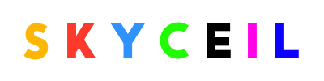
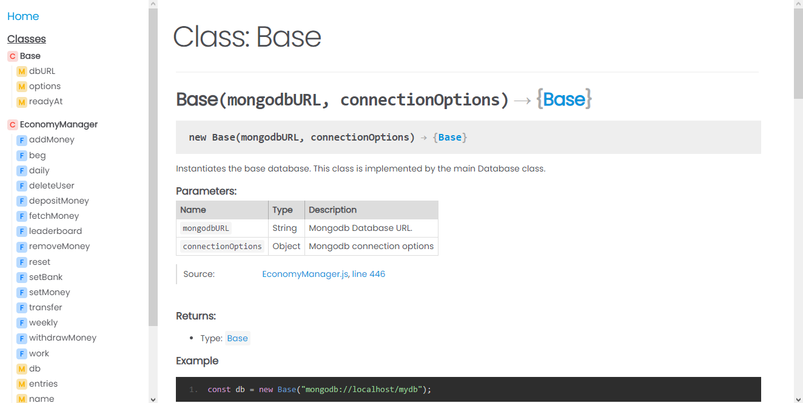
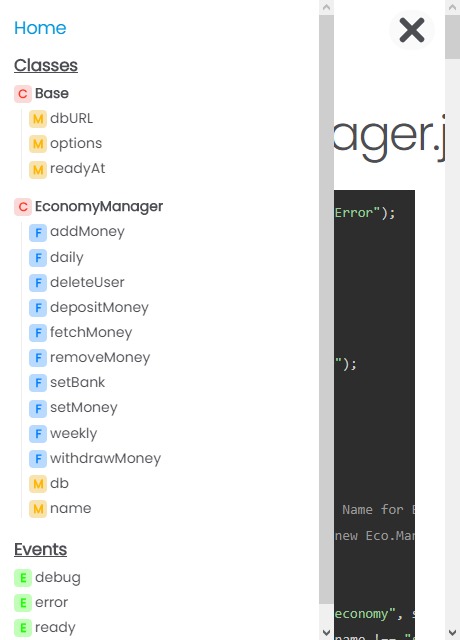

Clean & Minimalistic theme for JSDoc

Install
$ npm install jsdoc-skyceil
Usage
$ jsdoc ./ -t /path/to/skyceil
Clone
$ git clone https://github.com/zyrouge/jsdoc-skyceil
Overview
Better Highlighting

Responsive Design
